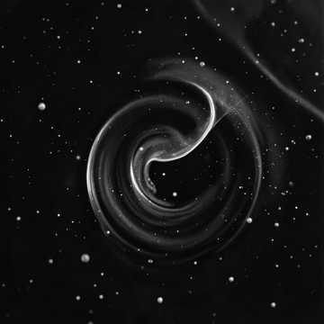
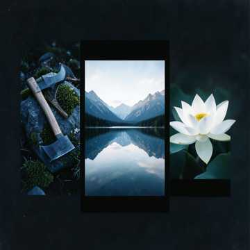

Song one
Source Code
How everything becomes somebody
0:00–:––
Two songs, and a few thoughts I've been carrying around. Take your time with them.
Press the play button to listen. Tap “Show the words” to read along.

How everything becomes somebody

Chop Wood, Carry Light
A few things I've been thinking about.
I am after euphoria, but I will settle for peace.
I am after overwhelming joy, but I will settle for a smile every once in a while.
I am after a deep understanding, in a feeling way, that I am surrounded by God, but I will settle for a deep understanding, intellectually, that everything and everyone is the universe. And that's special too.
He didn't need to wait for heaven. It was already here, wherever he noticed heavenly things: kindness, beauty, a moment of peace. And it would be wherever he brought them.
He wouldn't just look for heaven. He would carry it in.
There were two people: one he was, and one he saw himself becoming. If he could, although he wouldn't even if he could, he'd skip to the person he's becoming as who he is now.
He is already kind, considerate, loving, and amazing in a lot of ways, but he knew he was capable of being so much more, and in knowing that he was capable, he decided he would be so much more.
There was a part of him that felt like he needed validation from the outside world. Something that says you're amazing, you're awesome, you're wonderful, that comes from outside him.
He knew, however, the real goal was for him to calmly accept it as truth, and to hold it lightly, like fingertips on a hand, and carry it everywhere.
There was more space in him now: more space between the words, more space between the thoughts, more space to be who he is, more space to experience what he is.
Like the silence in a song.